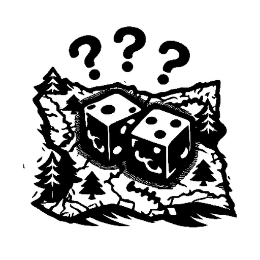

ElderForge Campaign
They say something ancient sleeps beneath the ice — a power sealed before memory, coiled in silence, waiting for the world to forget. But the freeze has lasted too long, and the frost is beginning to crack.
The continent of Terisiare lies frozen. Magic dwindles. Nations splinter. Beneath the Ohran Ridge, in a seam of stubborn warmth, a remote refuge endures: The Emberhold. Officially, it is neutral ground where apprentice mages can rest, trade, and train without being claimed by the great color academies. Unofficially, it is a hidden school of survival.
The Emberhold teaches Open Weave: do not anchor yourself to a fixed magical identity. Read the day’s temporal flow, feel the local leyflow, and adapt. In the Ice Age, magic is not a dependable road; it is a half-buried path through a blizzard.
You are an apprentice mage, newly awakened to your spark. Beyond the Emberhold’s wards lie rival wanderers, roaming dragons, buried dungeons, frozen towers, and expeditions into places that should have stayed lost. Your task is to follow fragments of impossible evidence: a shard that sings, an echo that remembers, and an imprint taken from ice older than nations. They point toward something buried beneath the glaciers — something history insists is dead, and yet the frost has begun to stir. With every turn, your Ascension grows. With every victory, your campaign inventory deepens. Only one may forge their name in the ice.
1. Campaign setup
Card piles
Shuffle and place these face-down piles on the table. Duel decks are assembled from these shared loaner piles; players only own cards they gain as campaign rewards.
| Pile | Contents |
|---|---|
| White / Blue / Black / Red / Green | One shuffled pile per color. |
| Artifact & nonbasic land pile | Artifacts and nonbasic lands. |
| Multicolor pile | All multicolor cards. |
| Vanguard mythics | Mythic creatures and planeswalkers. |
| Reliquary mythics | Mythic artifacts, lands, enchantments, and sorceries. |
Basic lands and Snowbank
Basic lands are not shuffled into duel libraries. Keep face-up stacks of Plains, Island, Swamp, Mountain, and Forest beside matching Snow-Covered basic stacks.
At any draw step, a player may draw a basic land from outside the game instead of drawing from their library. Snow-Covered basics use Snowcraft: for each color you are playing this duel, you begin with Snowcraft 1 for that color. Each time you would draw a card, you may instead take a matching Snow-Covered basic and spend 1 Snowcraft for that color. Snowcraft can be gained during the campaign; each +1 Snowcraft unlocks one additional snow basic slot usable during play. Snowcraft has a maximum of 3.
Tokens and supplies
| Supply | Use |
|---|---|
| Frost / Sky / Fire Crystals | The campaign currency. Frost pays common-tier costs, Sky pays uncommon-tier costs, and Fire pays rare-tier costs. |
| Gaian Crystal | Reusable green special crystal. Spend in Town: gain 1 multicolor card, or gain one each of Manalink, Weavelink, Landlink, and Runelink. Return it to the crystal bag after use. |
| Nexus Crystal | Reusable pink special crystal. Spend at a Campfire: gain 1 mythic from a pile of your choice, or gain 1 Map and 3 Rumors. Return it to the crystal bag after use. |
| Rumors / Maps | Scouting tokens used before drawing from the Journey Bag. |
| Links | Single-use pre-duel advantages: Manalink, Weavelink, Landlink, and Runelink. |
| Omens | Clues, Eternal counters, Snowcraft markers, and other persistent campaign markers. |
| Legendary token creatures | Five unique Legendary token creatures used by specific effects and encounters. |
Tile bags and starting tiles
The Emberhold is represented by two fixed Starting Tiles, one for Player 1 and one for Player 2. Placed together, they form the full Emberhold structure. These tiles begin on the table before any bag draws.
| Bag / group | Contents |
|---|---|
| Journey Bag | 30 Generic Duel tiles; 15 Rival tiles (3 copies each of five Rivals); 5 Roaming Dragon tiles; 5 Tower Entrance tiles; 5 Dungeon Entrance tiles; 10 Relic tiles; 10 Mystery tiles. |
| Sanctuary Bag | 30 Town tiles (10 towns × 3 copies). Add Campfire tiles according to your chosen map length. |
| Quest Bag | Triggered and placed tiles: Dungeon Mystery, Dungeon Boss, Tower Mystery, Tower Boss, Expedition Encounter, Expedition Mystery, Expedition Reckoning, Escort Run, and Bounty Contract tiles. |
2. Core campaign rules
Campaign turn reward
Levels, life totals, Campaign Slots, and Ascension thresholds
Campaign Slots are the number of personally owned campaign cards you may add to your loaner deck for a duel. Your Campaign Slots equal your current level; level E counts as 6.
| Level | Title | Starting life | Campaign Slots | Ascension needed for next level |
|---|---|---|---|---|
| 0 | Apprentice | 8 | 0 | 6 |
| 1 | Enchanter | 9 | 1 | 7 |
| 2 | Sorcerer | 10 | 2 | 8 |
| 3 | Mage | 11 | 3 | 9 |
| 4 | Wizard | 12 | 4 | 10 |
| 5 | Planeswalker | 13 | 5 | 12 |
| E | Elderforged | 15 | 6 | — |
Level-ups are resolved at Campfires when you have enough Ascension for the next level.
Attunement and loaner decks
Before each duel, each player performs Attunement: roll 6 custom dice with faces . Attunement represents the apprentice reading the day’s mana flow. The colors you roll are not just random colors; they are the spell currents the Ice Age makes available for that duel.
Use the Attunement Codex page to convert the roll into colors played and loaner deck construction.
| Initial Null count | Deck add-on |
|---|---|
| 0 Null | Add the Confluence Prism Pack. |
| 1–3 Null | Add that many Relic Toolkits, maximum 3. |
| 4+ Null | Add 3 Relic Toolkits; extra Null has no further add-on effect. |
Stability Count locks before resolvers: count Nulls in the initial roll before any resolver rerolls. Resolver rerolls can change color selection, but they never change whether you receive the Prism Pack or Relic Toolkits.
Filling Campaign Slots before a duel
After Attunement and loaner deck assembly, but before drawing opening hands, you may add up to your Campaign Slot limit from your owned cards. Each chosen card must match at least one color in the loaner deck. Artifacts and nonbasic lands may be used with any loaner deck. Campaign Slots apply only when you play as your own apprentice, not when you assume the role of an opponent.
After the duel, return all loaner cards to their piles. Your Campaign Slot cards remain yours unless a rule specifically removes one.
Campaign card rewards and risk
When you win a duel, you may claim one eligible card the defeated opponent owned that was either in play or in their graveyard during that duel. Loaner-deck cards are never eligible. Cards in libraries, hands, exile, or outside the game are not eligible.
Losing a duel does not create any persistent penalty marker. However, if you lose a duel, the winning opponent chooses one card from your Campaign Slots that was in play during that duel, if any. Remove that card from your ownership and place it on the bottom of its original card pile.
Rare Feat rewards
If you win a duel and satisfy any one Rare Feat below, immediately choose either 1 artifact/nonbasic land card or 1 multicolor card as a bonus reward.
| # | Rare Feat condition |
|---|---|
| 1 | Win with exactly 1 life remaining. |
| 2 | Win with no creatures you control in play. |
| 3 | Win with 0 cards in your library. |
| 4 | Win via alternate win condition. |
| 5 | Win by poisoning the opponent. |
Crystals and purchases
Crystals are drawn randomly from the shared crystal bag unless a rule says otherwise. Costs are always one crystal of the appropriate tier.
| Purchase | Cost |
|---|---|
| Common card | 1 Frost Crystal |
| Uncommon card | 1 Sky Crystal |
| Rare card | 1 Fire Crystal |
Unless a rule says otherwise, duel rewards grant equal amounts of Ascension and random Crystals.
Links
Players may carry Links between duels. Before a duel, a player may spend up to 3 total Links. Each Link is single-use and consumed once played. Duplicate Links are allowed.
| Link | Effect | Cost |
|---|---|---|
| Manalink | +1 starting life for the duel. | 1 Frost Crystal |
| Weavelink | After Attunement, reroll your entire Attunement once. You must use the new result. | 1 Frost Crystal |
| Landlink | After Attunement and deck assembly, but before drawing your opening hand, choose one basic land matching a color in your duel deck. It enters play tapped under your control. | 1 Sky Crystal |
| Runelink | +1 starting hand size for the duel. | 1 Fire Crystal |
Rumors and Maps
Immediately before drawing from the Journey Bag, you may spend one scouting token. Maps are gained from Whispers and Waymarks, the Nexus Crystal option, or by trading unused cards at a Town Market Stall.
| Spend | Effect |
|---|---|
| 1 Rumor | Reveal 2 Journey tiles, choose 1 to resolve, and return the other to the Journey Bag. |
| 1 Map | Reveal 3 Journey tiles, choose 1 to resolve, and return the other two to the Journey Bag. |
You may spend at most one scouting token per turn.
3. Non-clue Journey duels
Generic Foes
Generic Foes are the standard Journey duels. Each has a preset primary color and a Signature Eternal keyword token. Once each duel, when a creature enters play under that foe’s control, that player may put the foe’s Signature Eternal keyword token on that creature.
Deck assembly: Roll 1 color die. If it matches the foe’s primary color, the foe is mono-color. If it shows a different color, the foe is two-color: primary + rolled color. If it shows Null, the foe gains 1 Relic Toolkit and you roll again for the secondary color. If the second roll is Null, the foe remains mono-color with the Toolkit; otherwise add the rolled color as secondary, unless it matches the primary color.
Stats and reward: starting hand 5; starting life equals your current level’s starting life minus 2; Campaign Slots equal your level minus 1 (minimum 0). Defeating a Generic Foe grants +1 Ascension and 1 random Crystal.
| Color | Generic Foe | Signature Eternal keyword |
|---|---|---|
| White | Cilantresh | Flying |
| White | Adarkar Crusader | Double strike |
| White | Kjeldoran Paladin | First strike |
| White | Mardun Priestess | Lifelink |
| White | Aurora Seer of Kher Ridges | Trample |
| White | High Priest of Koilos | Indestructible |
| Blue | Saltremtor | Flying |
| Blue | Mind Stealer | Menace |
| Blue | Unseen Illusionist | Hexproof |
| Blue | Thought Invoker | Vigilance |
| Blue | Sea Lord of Ilesemare | Trample |
| Blue | Astral Visionary | Reach |
| Black | Agagalneer | Flying |
| Black | Krovikan Succubus | Menace |
| Black | Soldevi Charmer | First strike |
| Black | Vampire Lord | Lifelink |
| Black | Grim Necromancer | Deathtouch |
| Black | Greater Lich | Indestructible |
| Red | Queltosh | Flying |
| Red | Balduvian Warlock | First strike |
| Red | Karplusan Elementalist | Vigilance |
| Red | Elite Thaumaturge | First strike |
| Red | Dragon Lord | Trample |
| Red | Kaeloran Berserker | Double strike |
| Green | Altakesh | Flying |
| Green | Fyndhorn Beastmaster | Reach |
| Green | Wildcaller of Yavimaya | Trample |
| Green | Thorncrown Lord | Trample |
| Green | Grand Summoner | Hexproof |
| Green | Sarrazan Mystic | Deathtouch |
Rivals
The Journey Bag contains 15 Rival tiles: 3 copies each of five named Rivals.
| Rival | Color | Signature once each duel |
|---|---|---|
| Nyra Valewind | White | When a single source would deal damage to you, you may prevent that damage. |
| Thalavri of the Pale Grove | Green | When a land enters play under your control, put two +1/+1 counters on target creature you control. |
| Skara Veyne | Blue | When you become the target of a spell or ability an opponent controls, you may change the target to another legal target. |
| Rukk One-Eye | Red | After combat on your turn, Rukk deals 3 damage to any target and 1 damage to you. |
| Zareth Umbraxis | Black | When a creature an opponent controls dies, you may return that card to play under your control with a -1/-1 counter on it. |
Stats and reward: starting hand 5; starting life and Campaign Slots equal your current level. Deck assembly: 10 fixed-color cards + 10 rolled-color cards using the Rival color die rule. If the roll matches the fixed color, the Rival is mono-color. If the roll is Null, add 1 Relic Toolkit and reroll; double-Null means mono-color + Toolkit. Defeating a Rival grants +2 Ascension and 2 random Crystals.
Roaming Dragons
Roaming Dragons are rare difficult Journey duels, not boss fights.
| Dragon | Color | Always-on presence ability |
|---|---|---|
| Kiskara | White | Creatures you control have vigilance. |
| Whim | Blue | Opponents’ creatures enter play tapped. |
| Mandurang | Black | Whenever a creature an opponent controls dies, that player loses 1 life and you gain 1 life. |
| Dracur | Red | Players can’t gain life. |
| Prismat | Green | Whenever a creature you control becomes the target of a spell or ability an opponent controls, put a +1/+1 counter on that creature. |
Stats and reward: 20 starting life; starting hand 5; 4 Campaign Slots; mono-color only; deck includes 20 color cards, 1 Relic Toolkit, and 1 Confluence Prism Pack. Defeating a Roaming Dragon grants +4 Ascension and 4 random Crystals.
Relic tiles
When you resolve a Relic tile, flip a coin. If you win the flip, gain 1 mythic from the Reliquary pile. Otherwise, gain 1 card from the artifact & nonbasic land pile.
4. Clues, Dungeons, Towers, and Expeditions
Clue tokens and endgame requirement
To open the way to the buried prison, a player must hold one clue from each source type, and the three clue tokens must be of different colors. The evidence does not name what waits below; it only proves that the old stories are incomplete.
| Source location | Actual clue token gained | Found in |
|---|---|---|
| Ice Pillar Inscriptions | Parchment Imprint | Dungeons |
| Halls of Echoes | Echo Shell | Expeditions |
| Singing Crystals | Crystal Shard | Towers |
Chain tile rule
Dungeons, Towers, Expeditions, and Town Quests are chain tiles. When a chain begins, its source tile is committed to that chain.
- If you lose a duel inside a chain, gain no unresolved rewards. The chain remains in place; on your next turn you may retry the current duel or abandon the chain.
- If you abandon a chain before completion, return all tiles from that chain, including the source tile, to their proper bag. Move your piece back 1 tile.
- When a chain is completed, remove all tiles from that chain from the board and set them aside as completed.
Dungeons
Dungeon structure uses three separate tiles: Dungeon Entrance / Guardian, Dungeon Mystery, and Dungeon Boss. A completed Dungeon Boss grants a Parchment Imprint of that dungeon’s color and rolls 1 Treasure die.
| Dungeon | Color | Environment bonus | Guardian | Boss |
|---|---|---|---|---|
| The Forgotten Crypt | Black | Bad Moon: black creatures get +1/+1. | The Restless Warden | Necromancer Khoran |
| Molten Caves | Red | Blood Moon: red creatures get +1/+1. | Forged Titan | Lava Brute Yurtak |
| The Abyssal Caverns | Blue | Silver Moon: blue creatures get +1/+1. | Abyssal Leviathan | Libramancer Zael |
| The Aegis Vault | White | Sunset Moon: white creatures get +1/+1. | Pearl Golem | Master Vaultkeeper Morath |
| The Verdant Hollow | Green | Verdant Moon: green creatures get +1/+1. | The Wild Beastlord | Vine Witch Sylara |
| Duel | Starting life | Starting hand | Campaign Slots | Deck | Win reward |
|---|---|---|---|---|---|
| Dungeon Guardian | Your life +1 | 5 | Your Campaign Slots | Mono 20 + 1 Relic Toolkit | +2 Ascension and 2 random Crystals; place Dungeon Mystery and Dungeon Boss tiles. |
| Dungeon Boss | 15 | 5 | Your Campaign Slots +1 | Mono 20 + 1 Relic Toolkit + 1 Confluence Prism Pack | +3 Ascension, 3 random Crystals, Parchment Imprint, and 1 Treasure die. |
Towers
Tower structure uses three separate tiles: Tower Entrance / Guardian, Tower Mystery, and Tower Boss. A completed Tower Boss grants a Crystal Shard of that tower’s color and rolls 1 Treasure die.
| Tower | Color | Tower effect | Guardian | Boss |
|---|---|---|---|---|
| The White Tower | White | Creatures the opponent casts enter play tapped unless that player pays 1. | Blizzard Warden | Frost Sorceress Elira |
| Rimewind Keep | Blue | The first creature spell the opponent casts each turn costs 1 more. | Arcane Overlord | Heidar, Rimewind Master |
| Tresserhorn Fortress | Black | Whenever a creature card is put into your graveyard, you gain 1 life. | Chaeska, the Keeper | Lim-Dûl the Necromancer |
| Citadel Pyre Academy | Red | The first noncreature spell you cast each turn costs 1 less. | Fire Sentinel | Professor Malvorr |
| Thornreach Spire | Green | The first creature spell you cast each turn costs 1 less. | Rootwatcher | Thorntwister |
| Duel | Starting life | Starting hand | Campaign Slots | Deck | Win reward |
|---|---|---|---|---|---|
| Tower Guardian | Your life +1 | 5 | Your Campaign Slots | Mono 20 + 1 Relic Toolkit | +2 Ascension and 2 random Crystals; place Tower Mystery and Tower Boss tiles. |
| Tower Boss | 15 | 5 | Your Campaign Slots +1 | Mono 20 + 1 Relic Toolkit + 1 Confluence Prism Pack | +3 Ascension, 3 random Crystals, Crystal Shard, and 1 Treasure die. |
Expeditions
Expeditions are tied to towns and use three separate tiles: Expedition Encounter, Expedition Mystery, and Expedition Reckoning. A completed Expedition Reckoning grants an Echo Shell of that expedition’s color and rolls 2 Treasure dice, choosing 1 result.
| Town | Color | Expedition | Encounter | Reckoning opponent |
|---|---|---|---|---|
| Kjeld | White | Crystalline Void | Glass Stalker | The Choirbreaker |
| Soldev | Blue | Canyons of Bandu | Bandu Rift-Hunter | The Resonance Engineer |
| Krov | Black | Argoth Island | Drowned Brinewraith | The Last Listener |
| Flarghold | Red | Valley of the Chimes | Carillon Sentry | Warden of the Chimes |
| Kelsinko | Green | Sovereign’s Lantern | Lanternshade Prowler | The Lantern Sovereign |
| Glimmer Vale | White | Glacial Chasm | Frostgorge Serpent | Rift-Oracle |
| School of the Unseen | Blue | Shivering Chasm | Unseen Curriculum Specter | The Echo Scribe |
| The Black Spire | Black | Endless Sea | Abysmal Skimmer | Tide-Lich |
| Kher Keep | Red | Moongrave Shipwreck | Moongrave Revenant | Captain Blackwake |
| Elbreth | Green | Sheltered Valley | Havenwatcher | The Oath-Singer |
Expedition deck colors: Expedition opponents always include the expedition town’s color. Roll 2 color dice. Each Null adds 1 Relic Toolkit. Ignore dice that show the town color when determining secondary colors.
| Secondary colors rolled | Deck construction |
|---|---|
| No usable secondary color | 20 cards of the town color. |
| One usable secondary color | 10 town-color cards + 10 secondary-color cards. |
| Two different usable secondary colors | 10 town-color cards + 5 cards of each secondary color. |
| Duel | Starting life | Starting hand | Campaign Slots | Win reward | Special power |
|---|---|---|---|---|---|
| Encounter | Your starting life (max 12) | 5 | Your Campaign Slots (max 3) | +2 Ascension and 2 random Crystals. | Once each duel, as a sorcery, untap all lands you control. |
| Reckoning | Your starting life +2 (max 15) | 5 | Your Campaign Slots +1 (max 5) | +3 Ascension, 3 random Crystals, Echo Shell, and roll 2 Treasure dice, choose 1. | Once each duel, the first time you have no cards in hand, draw 3 cards. |
5. Towns, Campfires, and Town Quests
Towns
Each town appears on three Sanctuary tiles. A Town tile can provide one quest only; the three copies of each town support its three quest types.
| Color | Towns |
|---|---|
| White | Kjeld; Glimmer Vale |
| Blue | Soldev; School of the Unseen |
| Black | Krov; The Black Spire |
| Red | Flarghold; Kher Keep |
| Green | Kelsinko; Elbreth |
| Town action | Rules |
|---|---|
| Market Stall | Choose one Market trade: trade up to 3 owned unused cards matching the town’s color; for each traded card, gain 1 random new card of the same color and rarity. Or trade exactly 2 owned unused cards to gain 1 Map. You may also reveal 3 cards of the town’s color and buy any/all: Common costs 1 Frost, Uncommon costs 1 Sky, Rare costs 1 Fire. Unpurchased cards go to the bottom of their piles. |
| Manavault | Buy Links using the Link costs above. |
| Tavern or Questboard | Tavern: spend 1 Frost Crystal for 1 Rumor, or spend the night for 3 Rumors and skip your next turn. Questboard: choose one of the town’s available quests. |
Questboard is the final Town action. Choosing a quest commits the Town tile to that quest chain. On the next turn, place the corresponding quest tile ahead; on the following turn, move onto it and begin resolving it.
Campfires
Campfires are safe pauses in the frozen campaign. They are where apprentices catch their breath, level up, and sometimes receive strange visitors from beyond the ordinary weave.
| Campfire action | Rules |
|---|---|
| Level Up | If you have enough Ascension for your next level, you may level up. When you level up, resolve a Lore Encounter and gain 1 mythic from the Vanguard pile. |
| Spend Nexus Crystal | Gain 1 mythic from a pile of your choice, or gain 1 Map and 3 Rumors. Return the Nexus Crystal to the crystal bag. |
| Night of the Veil (optional mode) | If the adult-table Veil deck is enabled and not empty, nominate a number from 1–6, then roll a d6. If the result matches, Night of the Veil occurs and you gain 1 random Veil card. |
Escort Run quests
| Opponent | Town | Colors |
|---|---|---|
| Adarkar Waylay Priors | Kjeld | White / Blue |
| Rimewatch Extortionists | Glimmer Vale | White / Green |
| Soldevi Fence-Runners | Soldev | Blue / Black |
| Mistcloak Interdictors | School of the Unseen | Blue / White |
| Krovikan Sled-Reavers | Krov | Black / Red |
| Null-Oath Marauders | The Black Spire | Black / Blue |
| Balduvian Roadburners | Flarghold | Red / Green |
| Ashwarren Cutthroats | Kher Keep | Red / Black |
| Fyndhorn Tollkeepers | Kelsinko | Green / White |
| Shelterpass Pursuers | Elbreth | Green / Red |
| Starting life | Starting hand | Campaign Slots | Deck | Win reward | Quest reward | Special power |
|---|---|---|---|---|---|---|
| Your starting life (max 12) | 5 | Your Campaign Slots (max 3) | 20 cards: 10 of each predetermined color | +2 Ascension and 2 random Crystals | 2 artifact/nonbasic land cards; 2 Manalinks; 2 Rumors | Once each duel, as a sorcery, destroy target land. |
Bounty Contract quests
| Opponent | Town | Colors |
|---|---|---|
| Adarkar Enforcer | Kjeld | White / Blue |
| Rimewind Justiciar | Glimmer Vale | White / Green |
| Soldevi Savant | Soldev | Blue / Black |
| Hushmantle Magistrate | School of the Unseen | Blue / White |
| Krovikan Oath-Collector | Krov | Black / Red |
| Null-Writ Inquisitor | The Black Spire | Black / Blue |
| Balduvian Headtaker | Flarghold | Red / Green |
| Ashwarren Brandstalker | Kher Keep | Red / Black |
| Fyndhorn Debt-Hunter | Kelsinko | Green / White |
| Oathtrail Pursuer | Elbreth | Green / Red |
| Starting life | Starting hand | Campaign Slots | Win reward | Quest reward | Special power |
|---|---|---|---|---|---|
| Your starting life +1 | 5 | Your Campaign Slots +1 | +3 Ascension and 3 random Crystals | 2 multicolor cards; 1 Landlink; 1 Weavelink; 2 Rumors | Once each duel, as a sorcery, destroy target creature. |
Expedition quests are listed in the clue section because they are one of the three required clue paths.
6. Mystery and Treasure dice
Mystery die
| Face | Result | Effect |
|---|---|---|
| Sudden Ambush | Forced duel. Roll 3 color dice for the attackers’ colors. Attackers have your starting life and Campaign Slots. If any die is Null, attackers get +1 Relic Toolkit. If you win, gain +3 Ascension and 3 random Crystals. | |
| Snowline Revelation | Gain +1 Snowcraft, to a maximum of 3, and unlock one additional snow basic slot usable during play. | |
| Salvaged Cache | Roll 6 color dice. For each Null, gain 1 card from the artifact & nonbasic land pile. | |
| Mysterious Benefactor | Gain 2 random Crystals, and gain up to two Links you don’t yet have. | |
 | Whispers and Waymarks | Choose 2 colors. Null / artifact-nonbasic is a valid choice. Roll 6 color dice. Count matches for each chosen option. Higher count = Rumors gained; lower count = Maps gained. If tied, gain both equally. |
| A Gift from the Shadows | Gain 1 mythic from the Vanguard or Reliquary pile. |
Treasure die
Most Treasure rewards roll 1 Treasure die. Expedition Reckoning rolls 2 Treasure dice and chooses 1 result.
| Face | Result | Effect |
|---|---|---|
| Gift of the Realm | Gain 1 mythic from the Vanguard or Reliquary pile. | |
| Strength of Ages | Gain an Eternal +1/+1 counter. Once each duel, you may put a +1/+1 counter on a creature you control. | |
| Runeblight | Gain 1 random Eternal keyword ability counter. Once each duel, you may put it on any creature. | |
| Glacial Seal | Gain +1 Snowcraft, to a maximum of 3, and unlock one additional snow basic slot usable during play. | |
| Rite of Ascension | Forge a mythic: permanently sacrifice owned cards totaling 6 Essence (Common = 1, Uncommon = 2, Rare = 3). Reveal 1 Vanguard and 1 Reliquary mythic; choose one to gain and put the other on the bottom of its pile. | |
| Weakness of Ages | Gain an Eternal -1/-1 counter. Once each duel, you may put a -1/-1 counter on a creature an opponent controls. |
7. Endgame: The Dread Nexus and Merrevia Sal
Endgame entry condition
A player enters the endgame when they are Level E and hold one Parchment Imprint, one Echo Shell, and one Crystal Shard, with all three clue tokens being different colors.
The Dread Nexus
The Dread Nexus is a horizontal double tile that blocks the path. Other players who reach it in time must engage it as well.
| Opponent / effect | Rules |
|---|---|
| Null Suppression | Players can’t cast more than one spell each turn. Dread Nexus opponents are not affected. |
| The Eternal Watcher | 20 life; starting hand 5; 5 Campaign Slots. Deck color determination uses the player Attunement method. |
| The Voidbringer | 30 life; starting hand 5; 5 Campaign Slots. Deck color determination uses the player Attunement method. Once each duel, as a sorcery, exile target spell on the stack. |
Merrevia Sal
Merrevia Sal begins the campaign endgame with 99 life. Her remaining life persists across attempts and does not reset.
| Merrevia rule | Details |
|---|---|
| Deck | Merrevia does not use Attunement. She uses a fixed five-color Elder Dragon deck: 5 white, 5 blue, 5 black, 5 red, 5 green, 5 artifact/nonbasic land cards, and 6 mythics alternating Vanguard / Reliquary / Vanguard / Reliquary / Vanguard / Reliquary. |
| Starting hand | 7 cards. |
| Necromantic Agitation | After Merrevia draws her opening hand, mill cards from her library until a creature card is milled. Put that creature into play under Merrevia’s control with a -1/-1 counter on it without paying its mana cost. Put the other milled cards into her graveyard. |
| Spare condition | If a player reduces Merrevia’s life total to exactly 1, Merrevia is spared. Whether this was intentional or accidental does not matter. |
| Campaign record | Record whether Merrevia was slain or spared, and which player caused that result. Across multiple campaigns, the most common outcome becomes the official resolution for future ElderForge expansions. |
8. Saving the game
ElderForge uses a quick-save system. The board is reset between sessions; the campaign state is restored from compact records.
| Record for each player | Details |
|---|---|
| Progression | Level, current Ascension, and current location if needed. |
| Inventory | Frost / Sky / Fire Crystals; Rumors; Maps; Links; Gaian or Nexus special crystals if held. |
| Omens | Snowcraft, Eternal counters, and clue tokens by type and color. |
| Owned nonmythic cards | Record only the total number of owned nonmythic cards. |
| Owned mythics | Record the number of owned Vanguard mythics and Reliquary mythics separately. |
When resuming, return all tiles, cards, and tokens to their normal bags and piles, then rebuild each player’s saved inventory. For nonmythic cards, the player chooses any order for the five color piles, then draws one card from each chosen color pile, then one artifact/nonbasic land card, then one multicolor card; repeat this cycle until the saved nonmythic total is rebuilt. For mythics, redraw alternating Reliquary, Vanguard, Reliquary, Vanguard, and so on until the saved mythic counts are rebuilt.